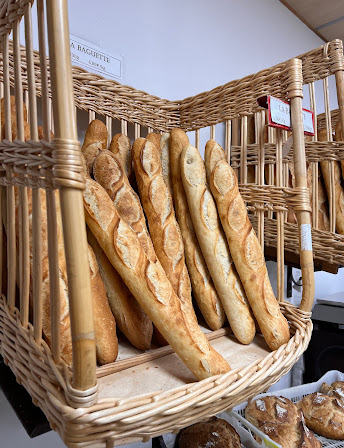
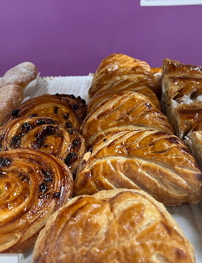
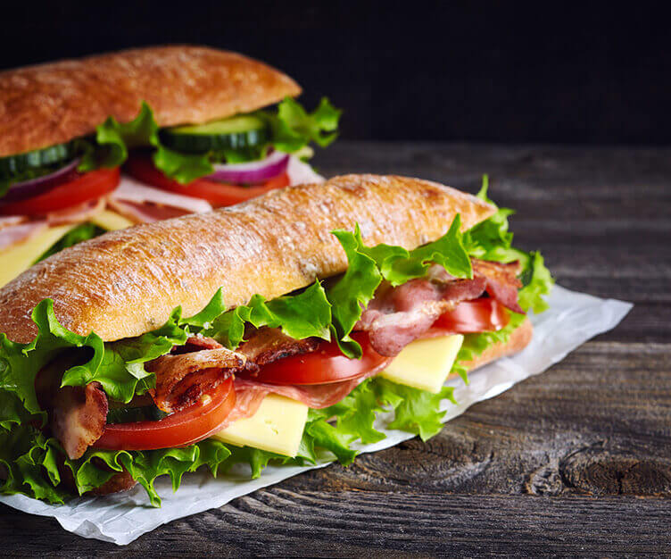

Pains & Baguettes
Baguette de tradition, pain de campagne, pains spéciaux... Une croûte croustillante, une mie généreuse, cuits chaque jour.
Artisan Boulanger & Pâtissier — Challes-les-Eaux
La tradition d'un vrai fournil, le raffinement d'une belle pâtisserie.

Notre Histoire
Au cœur de Challes-les-Eaux, Le Relais du Pain perpétue le vrai métier de boulanger : une pâte pétrie, façonnée et cuite sur place, jour après jour, loin de toute industrialisation.
Ici, rien n'est laissé au hasard : le pain est pétri à la main, les viennoiseries feuilletées avec patience, les pâtisseries montées avec soin. Nos clients le disent eux-mêmes — c'est un vrai artisan, et ça se goûte.
Chaque matin dès 6h30, le fournil s'anime pour offrir à Challes-les-Eaux et ses environs du pain frais, des viennoiseries dorées et des douceurs gourmandes, préparés avec les mêmes gestes que ceux d'un artisan boulanger depuis toujours.
Notre Savoir-Faire
Une gamme complète, entièrement faite main, pour accompagner votre quotidien comme vos grandes occasions.

Baguette de tradition, pain de campagne, pains spéciaux... Une croûte croustillante, une mie généreuse, cuits chaque jour.

Croissants, pains au chocolat, escargots aux raisins et chaussons — feuilletés maison pour un petit-déjeuner d'exception.

Tartes, éclairs, macarons et entremets, ainsi que nos bûches de Noël et galettes des rois, saluées par nos clients.

Sandwichs et pains bagnats préparés sur place pour une pause déjeuner généreuse et pratique.
Ils Nous Font Confiance
Retrouvez notre boulangerie sur Google — voici quelques avis qui nous touchent particulièrement.
« De très bons gâteaux, pain et viennoiserie et surtout un vrai artisan boulanger, pas de la panification. On est bien accueilli et il y a du choix. »
« Toujours reçue avec le sourire, avec un mot sympa. Rien d'industriel, que du délicieux. Je ne peux que recommander pour une gourmandise ou pour le pain quotidien. »
« Bûches commandées pour Noël, merveilleuses ! Des produits généreux, très bons, avec un accueil chaleureux et souriant. Merci ! »
« Inchangée depuis au moins 15 ans, cette boulangerie reste fort sympathique. On est toujours très bien reçu, et les pâtisseries — même le pain — sont meilleurs qu'ailleurs. »
« Merci pour vos pains de grande qualité et votre accueil et service toujours agréables. »
« J'adore. Tout est fait main et ça se sent. »
Nous Trouver
| Lundi | 06:30 – 19:00 |
| Mardi | 06:30 – 19:00 |
| Mercredi | 06:30 – 19:00 |
| Jeudi | 06:30 – 19:00 |
| Vendredi | 06:30 – 19:00 |
| Samedi | Fermé |
| Dimanche | 07:00 – 12:00 |
Un petit creux entre deux ? Nous sommes ouverts tôt le matin, tous les jours sauf le samedi.
Contact & Localisation